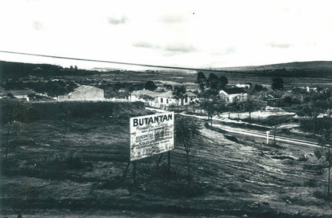
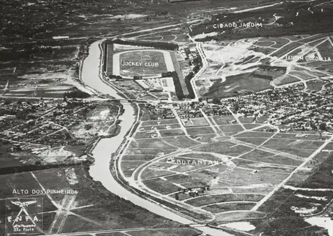
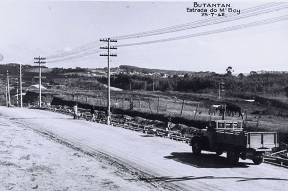
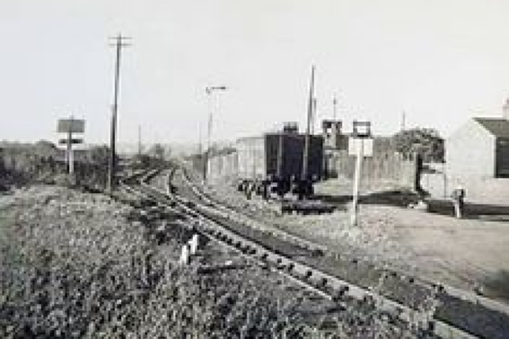
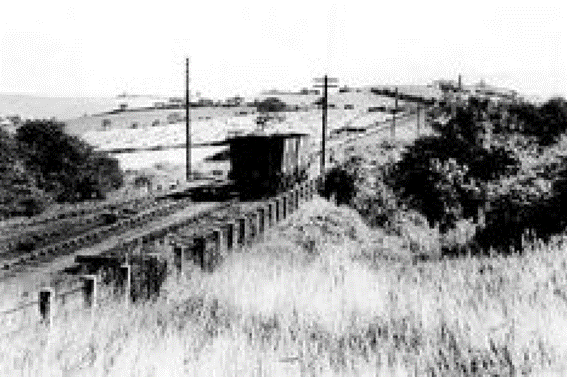
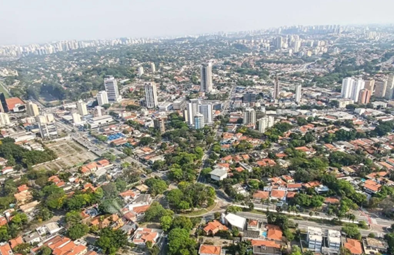
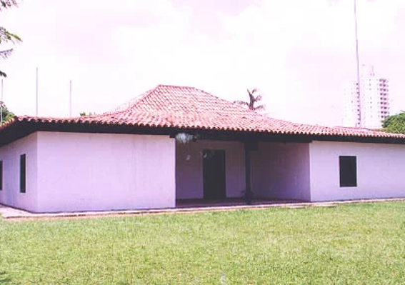
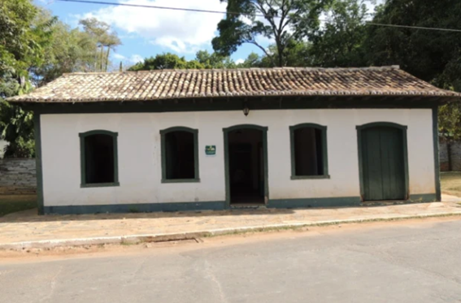
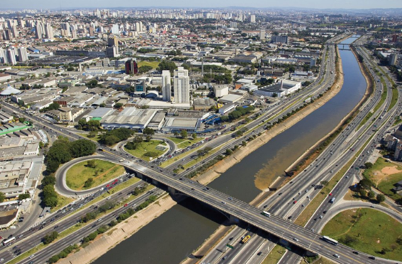
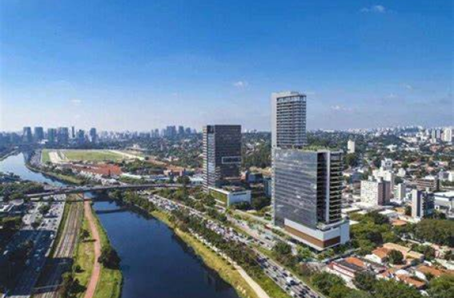

NOME: BUTANTÃ
- 
- 
- 
- 
- 
Bairro Butantã tem sei nome originado da língua geral paulistana e dois significados possíveis, o primeiro deles é “o vento que sempre sopra” e a segunda é “terra duríssima”.
COMO COMEÇOU?


Sua história começou por ser uma região conhecida como rota de passagens para bandeirantes (homens que desbravaram o Brasil em busca de novas terras) e jesuítas que estavam indo ao interior do país. Então, no ano de 1759, Afonso Sardinha montou o primeiro trapiche (fazenda ou produtor) de cana de açúcar da vila de São Paulo, e teve sua primeira colheita obtida em 1607.
Com os acontecimentos que levaram à expulsão dos jesuítas do Brasil em 1759, Afonso Sardinha teve suas terras confiscadas e vendidas, sendo que um dos últimos proprietários foi a família Vieira de Medeiros, os quais venderam em 1915 a terra para uma companhia, City Melhoramentos, a responsável por urbanizar as margens do Rio Pinheiros.
O BAIRRO ATUALMENTE
- 
- 
- 
- 
- 
Durante o século XVII e XVII duas construções históricas localizadas na região do Butantã respectivamente a Casa do Sertanista e a Casa do Bandeirante, ambas atualmente tombadas. Atualmente, é um dos bairros mais conhecidos e valorizados da cidade de São Paulo reunindo diversas características importantes, como ruas e avenidas que homenageiam grandes nomes do cenário nacional. Alguns exemplos são:
• Rua Poetisas Colombiana;
• Avenida Comendador Alberto Bonfiglioli;
• Rua do Lago;
• Avenida Corifeu Azevedo;
• Avenida Doutor Vital Brasil;
• Rua Agostinho Cantu;